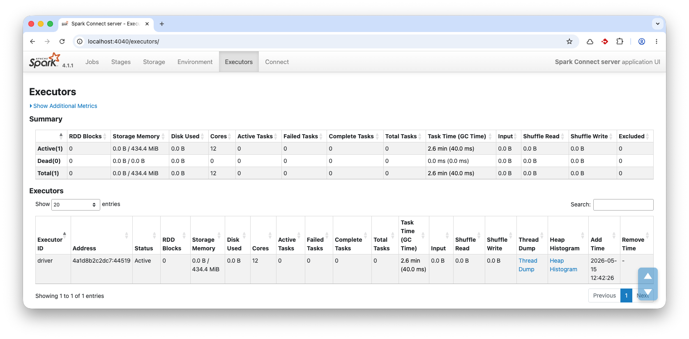

SRK01: Apache Spark
Apache Spark on suurten data-aineistojen käsittelyyn tarkoitettu analytiikkamoottori, jota voi käyttää esimerkiksi Pythonilla, Scalalla, Javalla, SQL:llä ja R:llä. Tässä harjoituksessa Sparkia käytetään PySparkilla eli Python-rajapinnan kautta.
PySpark välittää operaatiot Pythonista Sparkille, jonka ydinsuoritus tapahtuu JVM-pohjaisessa Spark-moottorissa. Kun käytetään Spark SQL:ää tai DataFrame API:a, suorituskyky on lähtökohtaisesti sama. Ei ole siis väliä, käytätkö SQL-kyselyitä, R-kieltä, Scalaa vai Pythonia – jos unohdetaan tietyt poikkeukset kuten UDF:t (User Defined Functions).
PySpark DataFrame API:ssa on samoja DataFrame-ajattelun piirteitä kuin Pandasissa ja Polarsissa, mutta suoritusmalli on erilainen. Spark on suunniteltu hajautettuun käsittelyyn: data jaetaan osituksiin, joita voidaan käsitellä rinnakkain useilla suorittajilla.
Pandas alkaa usein olla hankala, kun data ei mahdu mukavasti yhden koneen muistiin. Polars ja DuckDB pystyvät käsittelemään huomattavasti suurempia aineistoja yhden koneen ympäristössä, myös osittain muistia suurempia työkuormia. Spark on perusteltu valinta, kun tarvitaan klusterin laskentatehoa, muistia, fault tolerancea tai integroitumista hajautettuun data-alustaan. Sparkia voi silti ajaa myös paikallisesti yhdellä koneella, mikä sopii hyvin opetukseen ja kokeiluun. Ja näin me teemme tässä harjoituksessa.
Odotukset aisoihin
Yhden koneen moodissa Spark ei ole nopein vaihtoehto. Hajautettu suoritusmalli tuo overheadiä. Tällöin esimerkiksi Polars tai DuckDB voittavat benchmarkin yleensä melko suurilla marginaaleilla. Sparkin on oikeutettu valinta silloin, kun data, laskenta tai I/O kannattaa jakaa useille koneille eli datasetti on valtava. Mikään autopilot Apache Spark ei ole silloinkaan. Spark skaalautuu erityisen hyvin töissä, joissa data voidaan käsitellä rinnakkain vähäisellä datan siirtelyllä (eli narrow transformations). Wide-operaatiot, kuten JOIN, GROUP BY ja ORDER BY, voivat aiheuttaa shufflea eli datan uudelleenjakoa solmujen välillä. Tällöin verkosta tulee pullonkaula.
Nämä operaatiot eivät ole kiellettyjä tai automaattisesti hitaita, mutta niiden suorituskyky vaatii huolellista suunnittelua esimerkiksi partitioinnin osalta. Käytännössä tämä ajaa siihen, että loppukäyttäjälle tarkoitetun taulun tietomallian one big table on yllättävän tehokas, kun taas rankasti normalisoitu tietomalli aiheuttaa helposti suorituskykyongelmia.
Tässä harjoituksessa käytetään yhtä Spark-instanssia, jota ajetaan Docker Compose -projektissa. Lokaalissa host-koneessa käytämme Marimo Notebookia, joka kutsuu tuota instanssia. Jos haluat nähdä toteutuksesta kuvaajia, kannattaa vilkaista esimerkiksi Sanjeet Shuklan kirjoitus Medium: Setting Up Apache Spark from Scratch in a Docker Container: A Step-by-Step Guide. Erona on se, että me ajamme lokaalin clientin uvx marimo edit --sandbox <notebook>-komennolla, emmekä aja kontin sisällä Jupyter Notebookia. Näin ero clientin ja hostin välillä on selkeämpi.
Esivaatimukset
- Docker ja Docker Compose
- Marimo Notebook (
marimo[recommended]).
Valmistelut: Spark Instance
Luo hakemisto harjoitustasi varten, esimerkiksi spark-harjoitus/. Lisää sinne alla oleva compose.yaml:
services:
spark-connect:
image: spark:4.1.1-scala2.13-java17-python3-ubuntu
container_name: srk01-spark-connect
user: root
ports:
- "15002:15002"
- "4040:4040"
volumes:
- spark-lake:/lake
- ./bootstrap.sh:/bootstrap.sh:ro
working_dir: /lake
command: ["/bin/bash", "/bootstrap.sh"]
volumes:
spark-lake:
Lisää myös bootstrap.sh-tiedosto samaan hakemistoon:
#!/usr/bin/env bash
set -euo pipefail
mkdir -p /lake/warehouse
mkdir -p /lake/metastore
mkdir -p /tmp/spark-local
mkdir -p /opt/spark/logs
chown -R spark:spark /lake /tmp/spark-local /opt/spark/logs
su spark -s /bin/bash -c '
/opt/spark/sbin/start-connect-server.sh \
--master local[*] \
--conf spark.connect.grpc.binding.address=0.0.0.0 \
--conf spark.connect.grpc.binding.port=15002 \
--conf spark.sql.warehouse.dir=/lake/warehouse \
--conf spark.sql.catalogImplementation=hive \
--conf "spark.hadoop.javax.jdo.option.ConnectionURL=jdbc:derby:/lake/metastore/metastore_db;create=true" \
--conf spark.hadoop.javax.jdo.option.ConnectionDriverName=org.apache.derby.jdbc.EmbeddedDriver \
--conf spark.local.dir=/tmp/spark-local
'
tail -f /dev/null
Käynnistä palvelu:
Tässä välissä kannattaa avata selaimessa localhost:4040, josta näet Sparkin Web UI:n. Tämän portaalin kautta seuraat Spark-sessioidesi tilaa ja debuggaat ongelmia. Näkymä ei ole mikään dummy-toteutus, vaan tulee hyvin tutuksi, jos työelämsässä alat käyttää AWS EMR:ää, Databricksiä tai vastaavaa hostattus Spark-palvelua.

Kuva 1: Spark Web UI:n Executors-näkymässä näkyy listattuna meidän ainut noodi, eli Docker-ympäristössä pyörivä driver ID:llä tunnettu Executor. Jos rakentaisit Spark-klusterin, tässä listassa näkyisivät kaikki koneet.
Tehtävänanto
Seuraa Spark Getting Started -ohjetta ja rakenna alla kuvattu kokonaisuus.
1. Testaa komentorivillä
Ennen Marimo Notebook -ympäristöön siirtymistä, testaa Spark CLI:llä, että yhteys toimii. Käynnistä Spark-sessio:
Aukeaa Python REPL:iä muistuttava Spark Shell, jossa voit ajaa Sparkille natiivia Scala-kieltä. Kokeile esimerkiksi:
Tip
Pääset shellistä ulos komennolla :quit tai painamalla Ctrl+D.
Kokeile vielä PySpark CLI:tä:
Kokeile luoda ensimmäinen DataFrame. Tähän löytyy ohje Sparkin dokumentaatiosta DataFrame Creation. Komento alla:
from datetime import datetime, date
import pandas as pd
from pyspark.sql import Row
df = spark.createDataFrame([
Row(a=1, b=2., c='string1', d=date(2000, 1, 1), e=datetime(2000, 1, 1, 12, 0)),
Row(a=2, b=3., c='string2', d=date(2000, 2, 1), e=datetime(2000, 1, 2, 12, 0)),
Row(a=4, b=5., c='string3', d=date(2000, 3, 1), e=datetime(2000, 1, 3, 12, 0))
])
df
Huomaa, että pelkkä df ei tulosta DataFramen sisältöä, kuten se tekisi esimerkiksi Pandasissa tai Polarsin eager-moodissa. Jos haluat nähdä tulosteen, sinun tulee kirjoittaa df.show(). Spark on lazy -mallinen, mikä tarkoittaa, että se ei tee mitään ennen kuin suoritetaan toiminto, joka vaatii tuloksia, kuten show(), collect() tai count(). Tämä on tärkeä ero verrattuna esimerkiksi Pandasiin, joka on eager -mallinen.
2. Marimo Notebook
Luo sinun host-koneellasi, eli ei siis kontin sisällä, Marimo Notebook -tiedosto. Esimerkiksi srk01_spark.py. Lisää sinne tarvittavat importit. Jos haluat päästä helpolla, kopioi alta valmis runko.
# /// script
# dependencies = [
# "marimo",
# "pyspark-client==4.1.1",
# ]
# requires-python = ">=3.14"
# ///
import marimo
__generated_with = "0.23.6"
app = marimo.App(width="medium")
with app.setup:
import pyspark.sql.functions as F
from pyspark.sql import SparkSession
@app.cell
def _():
import marimo as mo
return
if __name__ == "__main__":
app.run()
Käynnistä Marimo Notebook komennolla:
3. Tunnista, että lokaali client ei sisällä Spark-moottoria
Huomaa, että olemme asentaneet vain ja ainoastaan pyspark-client-paketin, joka on kevyempi versio PySparkista, joka ei sisällä Spark-moottoria. Jos yrität luoda DataFramen, saat virheen. Kokeile vaikka:
# TÄMÄ SIIS KAATUU!
spark = (
SparkSession.builder
.appName("This is destined to fail")
.getOrCreate()
)
4. Yhdistä Spark Connect -palveluun
Spark Connect on Spark 4.0:ssä esitelty uusi rajapintakerros, joka mahdollistaa Spark-sovellusten ajamisen erillisessä prosessissa tai jopa eri koneella kuin Spark-moottori. Tämä on erityisen hyödyllistä, kun halutaan ajaa Spark-sovelluksia kevyemmillä asiakkailla, kuten Marimo Notebookissa. Tämä ei poista sitä, että ennenkin on ollut mahdollistaa ajaa Sparkin ns. heavy lifting -operaatiot erillisessä prosessissa.
Lisää uusi sessio. Luonteva paikka tälle on Setup Cell, koska se ajetaan aina vain kerran ja on riippuvuus kaikelle muulle. Näin spark-objekti on käytettävissä kaikissa soluissa.
# Tämä on Setup Cell:n sisältöä
import pyspark.sql.functions as F
from pyspark.sql import SparkSession
spark = (
SparkSession.builder
.remote("sc://localhost:15002")
.appName("SRK01 Marimo Spark Connect")
.getOrCreate()
)
Nyt voit jossakin muussa solussa testata esimerkiksi:
Toinen testi voisi olla vaikkapa:
Tip
Käy tässä välissä taas Spark Web UI:ssä. Välilehti "Connect" sisältää nyt tämän session.
5. Lisää Warehouseen
Huomaa, että Spark ei voi lukea sinun koneesi sisältöä. Tämä on hajautettujen järjestelmien ja etäkäyttökoneiden – kuten CSC:n – kanssa varsin tavallista. Sinun tulee siirtää data Spark-palvelun luettavaksi tavalla tai toisella.
Kokeillaan ensin kirjoittaa nykyinen DataFrame levylle. Tämän pitäisi olla sallittua, koska /data on käyttäjän spark omistama hakemisto, ja warehouse on määritelty /lake/warehouse-hakemistoon. Kokeile:
# DataFramen luonti
_df = spark.createDataFrame([
(1, "Alice"),
(2, "Bob"),
])
_df.write.saveAsTable("d_people")
6. Tutki Warehousea
Voit tutkia warehousen sisältöä Bashillä. Kokeile:
Tip
Mikä mahtaa olla _SUCCESS-tiedosto?
6. Poista taulu
Voit poistaa taulun komennolla:
Huomaat, että se katoaa myös warehousesta.
7. Lisää pingviinit järveen
Tehdään meille staging-alue, joka on selkeästi erillään warehousesta. Kirjoitetaan sinne internetistä löytyvä CSV-tiedosto. Kokeile:
docker compose exec spark-connect bash
URI='https://raw.githubusercontent.com/mwaskom/seaborn-data/refs/heads/master/penguins.csv'
mkdir -p /lake/staging/penguins
curl -o /lake/staging/penguins/penguins.csv $URI
Nyt jos ajaisit komennon head /lake/staging/penguins/penguins.csv, näet, että data on siellä. Kokeile lukea se Sparkilla:
penguins_df = spark.read.csv("/lake/staging/penguins/penguins.csv", header=True, inferSchema=True)
penguins_df
Huomaa, että Marimo Notebook näyttää vakiona 10 riviä datasta. Jos sama komento olisi ajettu Polars-taululle, voisimme plärätä paginoidusti koko taulun läpi.
8. Materialisoi pingviinit
CSV-tiedosto on DataFramessa, jota voi toki plärätä, mutta tehdään siitä taulu meidän warehouseen.
penguins_df.write.saveAsTable("d_penguins", mode="ignore") # ignore on mahdollisia toistuvia ajoja varten
Tip
Huomaa, että Spark on itse päätellyt skeeman. Voit tarkistaa sen komennolla penguins_df.printSchema(). Tuotannossa skeema kannattaa määritellä eksplisiittisesti.
Vaihtoehtoisesti voit tarkistaa skeeman näin:
9. Tee iso SQL-kysely
Kokeile jotakin isoa SQL-kyselyä. Voit halutessasi vibe-koodata tämän valitsemallasi kielimallilla. Yksi esimerkki on seuraava kysely, joka etsii kaikki parit, jotka:
- kuuluvat samaan lajiin
- asuvat samalla saarella
- ovat eri sukupuolta
spark.sql("""
SELECT
p1.species,
p1.island,
p1.sex AS sex_1,
p2.sex AS sex_2,
p1.body_mass_g AS body_mass_1,
p2.body_mass_g AS body_mass_2,
p2.body_mass_g - p1.body_mass_g AS body_mass_difference_g
FROM d_penguins p1
JOIN d_penguins p2
ON p1.species = p2.species
AND p1.island = p2.island
AND p1.sex <> p2.sex
WHERE
p1.sex IS NOT NULL
AND p2.sex IS NOT NULL
AND p1.body_mass_g IS NOT NULL
AND p2.body_mass_g IS NOT NULL;
""")
Tip
Kun tauluissa on miljardeja rivejä, et käytännössä voi suorittaa .collect()-operaatiota, koska driver-koneen muisti loppuisi kesken. Jos haluat piirtää kuvaajia, tulee sinun aggregoida data ensin (esim. GROUP BY-operaatiolla) ja hakea vain aggregoidut tulokset driver-koneelle. Kun rivejä on enää satoja tai tuhansia, voit hakea ne drive-koneelle esimerkiksi toPandas()-operaatiolla, joka muuntaa Spark DataFramen Pandas DataFrameksi, ja tekee plottauksen helpoksi.
10. Tutki Web UI:ta
Kurkkaa, kuinka komennon suoritus näkyy Spark Web UI:ssä. Välilehdeltä SQL / DataFrame tunnistat tuoreimman ID:n. Huomaat, että syntynyt DAG on selkeästi ihmisen luettavissa, joskin vaatii Apache Sparkiin tutustumista, jotta ymmärrät esimerkiksi Broadcast Hash Joinin luonteen.
11. Tuhoa ympäristö
Kun olet valmis, aja komento:
Kuinka tästä eteenpäin?
Jos haluat jatkaa Apache Sparkin opiskelua, suosittelen jättämään konfiguroinnin pienelle. Ota käyttöön Databricks Free Edition. Sinulla ei kuitenkaan ole isoja datamääriä, joten pärjännet kyseisen palvelun rajoituksilla. Sisältöä on netissä enemmän kuin ihminen ehtii lukea. Yksi hyvä paikka aloittaa on Databricksin oma dokumentaatio, toinen ovat ohjesivustot kuten sparklearning.
Videolla esitettävä
Tässä harjoituksessa videon tulee osoittaa vähintään seuraavat asiat:
- Kerrot, kuinka monta tuntia käytit harjoitukseen.
- Selität lyhyesti, mikä on Apache Spark ja mihin sitä tyypillisesti käytetään (vertaa esim. Pandasiin).
- Käynnistät Docker Compose -palvelun videolla (
docker compose up -d). - Avaat selaimeen Spark Web UI:n (localhost:4040) ja näytät pystyssä olevan executorin.
- Avaat Marimo Notebookin ja näytät, kuinka yhdistät lokaaliin Spark Connect -palveluun.
- Näytät, että olet lukenut dataa (kuten pingviini-tiedoston) ja tallentanut sen tauluksi warehouseen.
- Suoritat laajemman SQL-kyselyn tai DataFrame-operaation ja näytät sen palauttamat vastaukset.
- Näytät Spark Web UI:n
SQL / DataFrame-välilehdeltä, kuinka äsken ajamasi kyselyn DAG-kuvaaja ja suoritustiedot piirtyvät sinne.